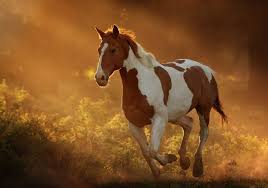

Cavallo
Il cavallo (Equus) è un mammmifero perissodattilo di medio-grossa taglia appartenente alla famiglia degli Equidi. Con l'avvento dell'addomesticamento si è distinto dal cavallo selvatico, di cui è considerato una sottospecie.

Il cavallo (Equus) è un mammmifero perissodattilo di medio-grossa taglia appartenente alla famiglia degli Equidi. Con l'avvento dell'addomesticamento si è distinto dal cavallo selvatico, di cui è considerato una sottospecie.